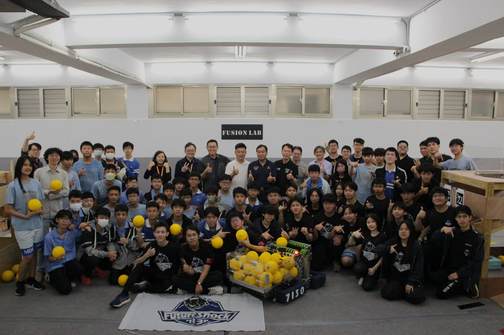
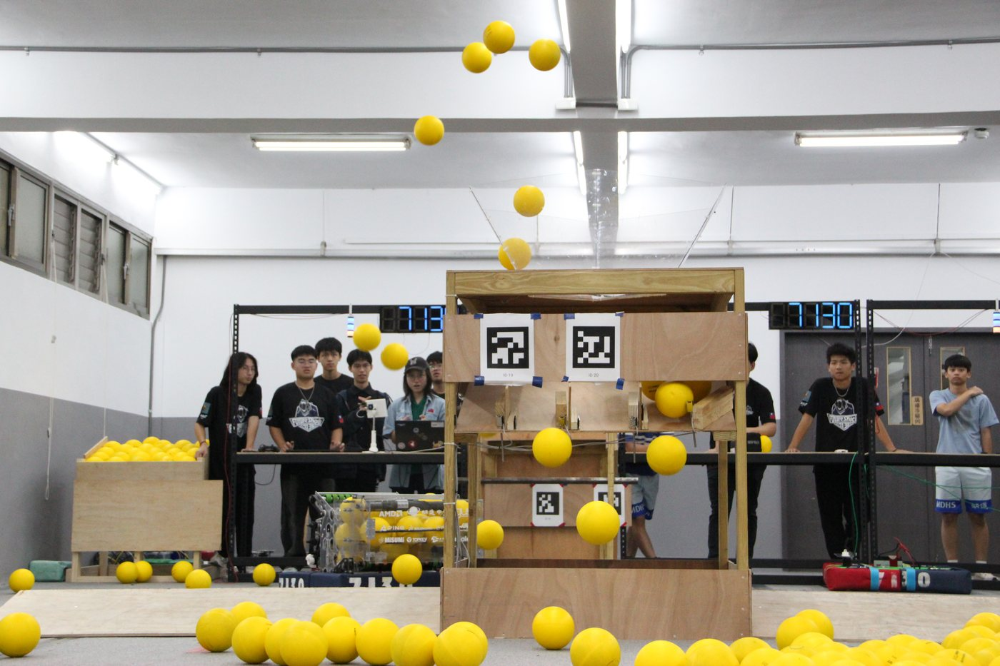
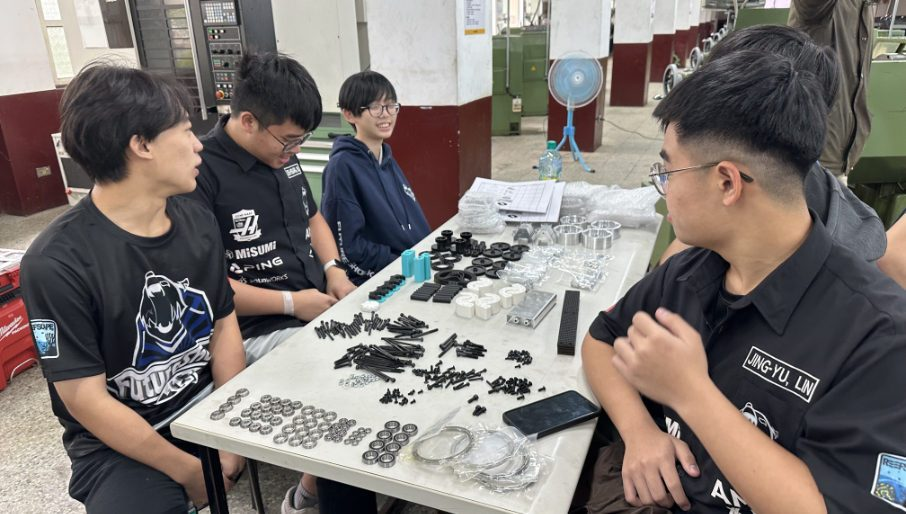
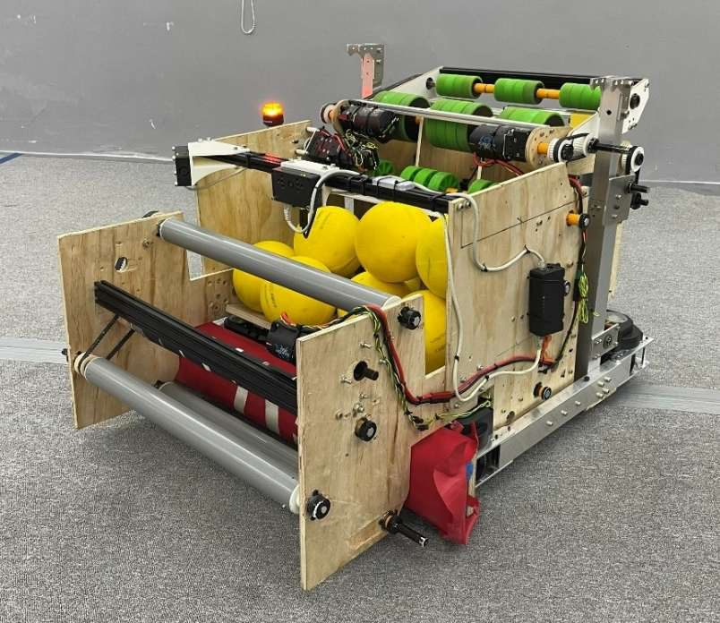
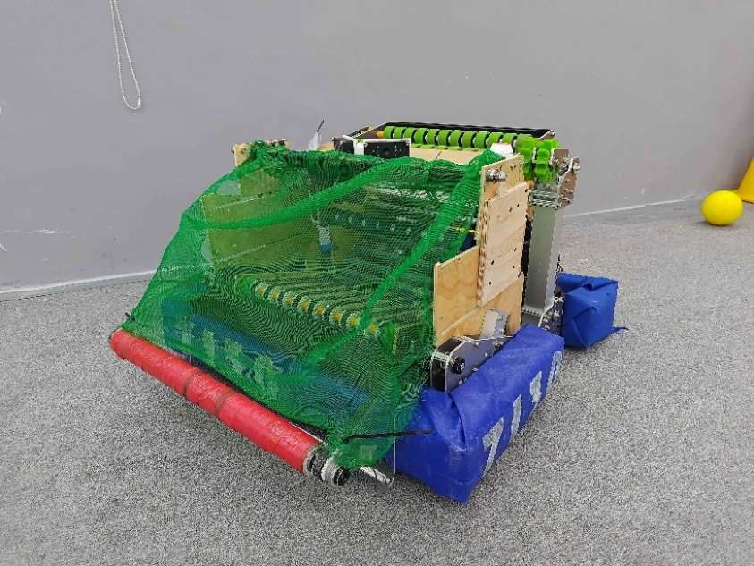
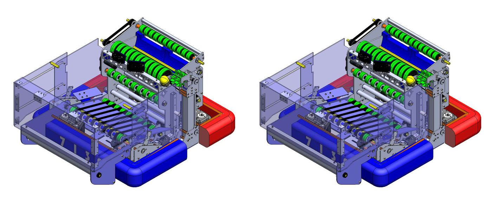
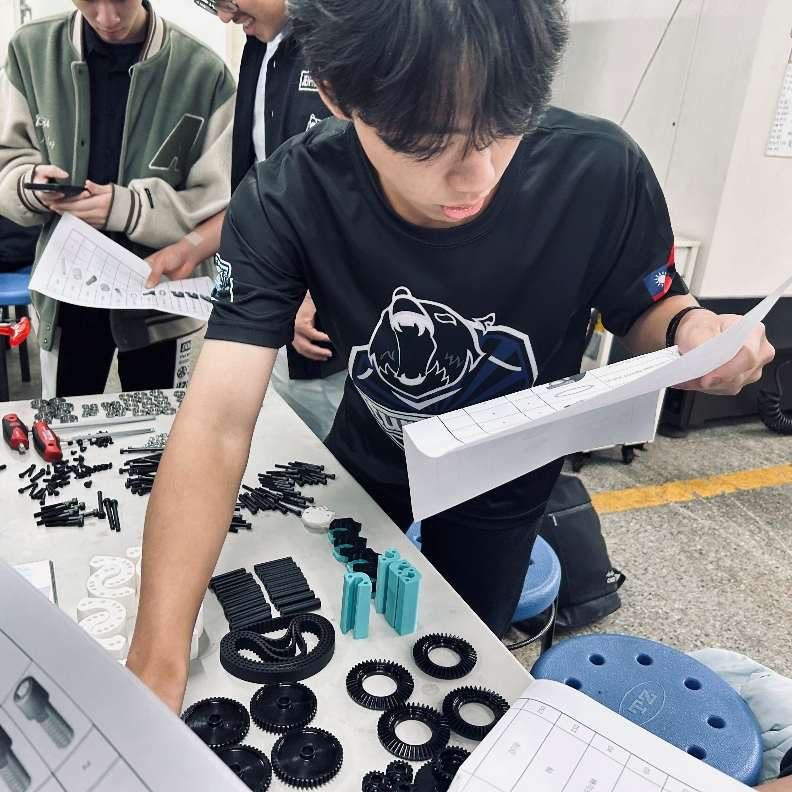
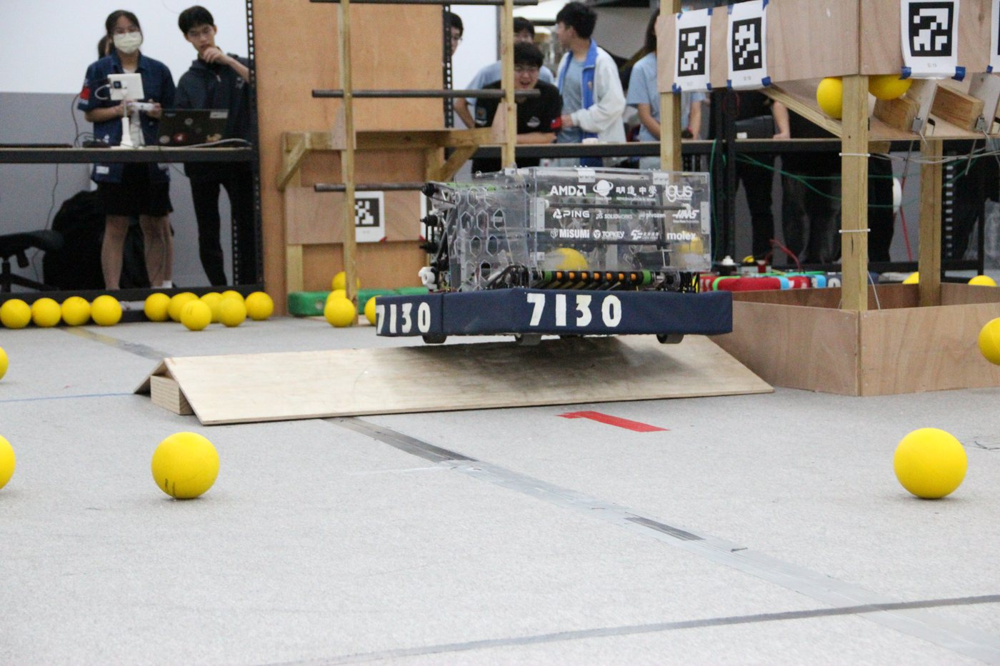
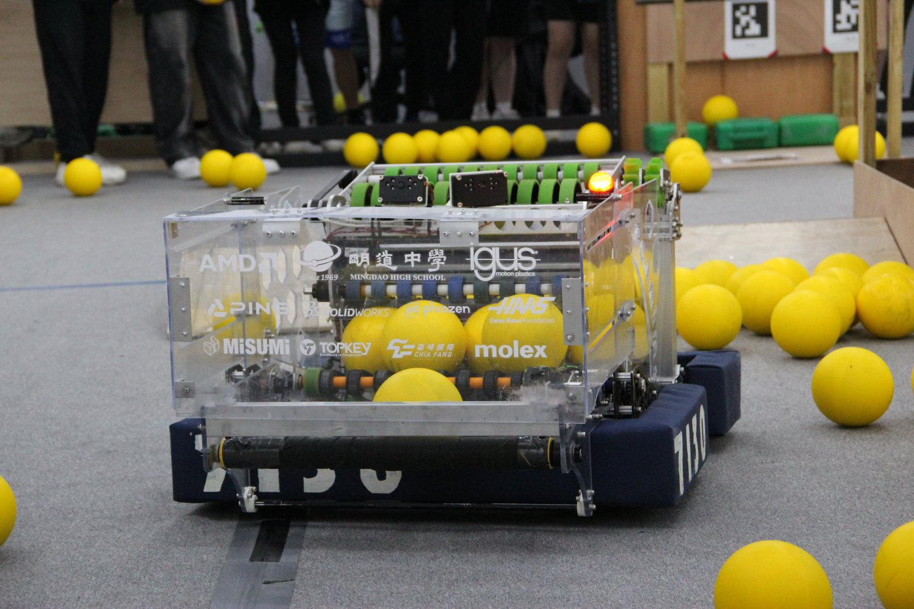
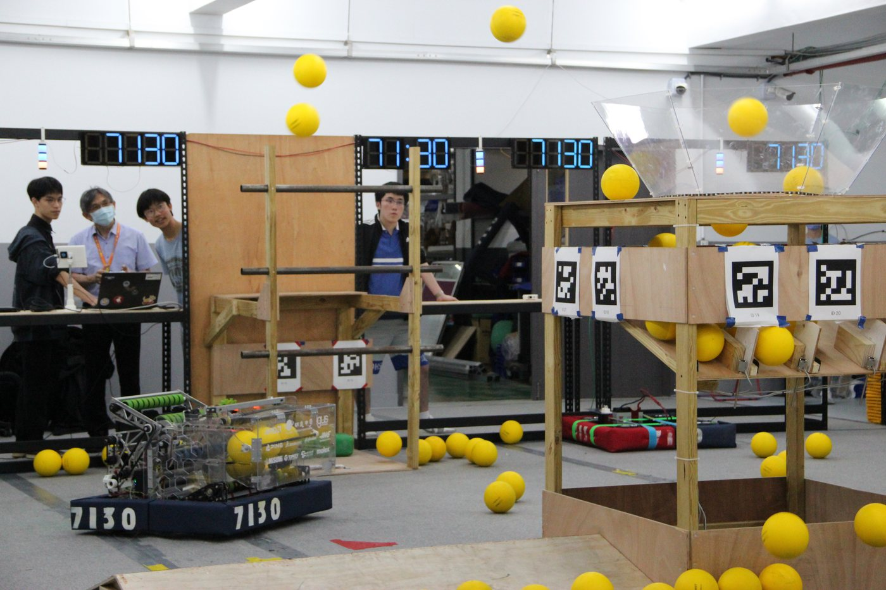

This is the digital record of how our 2026 robot came to be — from the first read of the game manual to the Final Bot. It documents not just the machine, but the brainstorming, the testing, the failures, and the engineering decisions behind it. 這是我們 2026 年機器人誕生過程的數位紀錄——從第一次研讀比賽手冊到最終機器人。記錄的不只是機器本身，更是腦力激盪、測試、失敗與每個工程決策。


Two alliances compete to collect FUEL (15 cm foam balls) and shoot it into the HUB, which cycles between active and inactive states every 25 seconds. Matches run 160 seconds: a 20-second autonomous period, teleop, and a 30-second endgame where robots climb the TOWER (Level 1 = 10 pts, Level 2 = 20 pts, Level 3 = 30 pts). Field obstacles include the BUMP (raised obstacle) and the TRENCH (low arch). 兩個聯盟競相收集 FUEL（15 公分泡棉球）並射入 HUB，HUB 每 25 秒在啟用／停用狀態間切換。比賽共 160 秒：20 秒自動階段、手動操作階段，以及 30 秒終局——機器人可攀爬 TOWER（第一層 10 分、第二層 20 分、第三層 30 分）。場上障礙包括 BUMP（隆起障礙）與 TRENCH（低矮拱門）。

Our six-step kickoff process, adapted from Teams 581, 2791, and 4481: 參考 581、2791、4481 隊方法改良的六步驟開賽流程：
We adopted a Prototype-First strategy to validate physical variables CAD cannot capture — material compression, friction — before committing to a design. Four core mechanisms were prototyped: Intake (collect FUEL), Indexer (transport it), Shooter (score it), and Climber (climb the TOWER). 我們採取「原型優先」策略，在定案前驗證 CAD 無法模擬的物理變數——材料壓縮量、摩擦力。共製作四大核心機構原型：Intake（收集 FUEL）、Indexer（輸送）、Shooter（射球得分）、Climber（攀爬 TOWER）。
Example — intake testing: linear testing fixed one variable at a time. A compression of 0.5 in balanced intake speed against acquisition consistency. Stealth Wheels vs. PVC pipe rollers proved nearly identical (avg 9.79 vs 9.81 FUEL/s measured with Team 4481's Ball Counter) — so we chose PVC, saving our limited Stealth Wheel supply. 以 Intake 測試為例：採線性測試法，一次固定一個變數。0.5 英吋壓縮量在進球速度與穩定性間取得最佳平衡。Stealth Wheel 與 PVC 管滾輪表現幾乎相同（以 4481 隊的 Ball Counter 量測，平均 9.79 對 9.81 顆/秒）——因此選用 PVC，保留有限的 Stealth Wheel 庫存。

The Alpha Bot unified the best prototypes into one robot, shifting the question from "does this mechanism work?" to "does the robot work as a system?" Goals: validate mechanical integration, surface system-level interaction issues, and evaluate structure, weight distribution, and stability. Alpha Bot 將最佳原型整合為一台機器人，把問題從「這個機構能動嗎？」轉變為「整台機器人能作為一個系統運作嗎？」目標：驗證機構整合、找出系統層級的交互問題，並評估結構、配重與穩定性。

The Beta Bot turned the integrated prototype into a competition-ready platform, focused on three pillars: structural durability (reinforcing impact-prone parts), consistency (sustaining >16 FUEL/s firing under varying battery voltage), and maintenance accessibility (quick-service repairs between matches). Key upgrades: vertical-stowing intake with friction-wrapped PVC rollers, a 25-ball indexer feeding 16 balls/sec, and a shooter with 10°–35° dynamic angle adjustment via rack-and-pinion and dual-stage flywheels. Beta Bot 把整合原型打造成可上場比賽的平台，聚焦三大支柱：結構耐久性（強化易受撞擊部位）、穩定性（在電壓變動下維持每秒 16 顆以上的射速）、維修便利性（資格賽間隙的快速維修）。主要升級：可垂直收折、滾輪包覆增摩材料的 Intake；可儲 25 顆、每秒供 16 顆的 Indexer；以齒條傳動實現 10°–35° 動態仰角、雙級飛輪的 Shooter。


| Subsystem子系統 | Highlights重點規格 |
|---|---|
| Drivetrain底盤 | MK5n L2 swerve, 16.8 ft/s; bumper cutouts for frame-to-tower contact; quick-release bumper latches.MK5n L2 swerve，16.8 ft/s；防撞框開孔讓車架直接觸塔；快拆式防撞框。 |
| Intake | 11.8 FUEL/s, 53-FUEL storage with a dynamic collapsible expansion box triggered by intake movement.11.8 顆/秒，53 顆儲量——伸縮式儲球箱隨 Intake 動作自動展開。 |
| Indexer | 16 FUEL/s; pivot-style quick-access design secured by just four screws for rapid electronics access.16 顆/秒；翻轉式快拆結構僅用四顆螺絲固定，可迅速檢修電路。 |
| Shooter | 16 FUEL/s, 3 at a time, stable trajectory from any position; dual-row differential drive; giant 3D-printed rack for 10°–35° elevation.16 顆/秒、一次 3 顆、任意位置皆可命中；雙排差速驅動；大型 3D 列印齒條控制 10°–35° 仰角。 |
| Climber | Level 1 climb & descend; double telescope, 1:60 reduction; holds 8.6 s after disable.可攀爬至第一層並下降；雙節伸縮、1:60 減速比；斷電後仍可支撐 8.6 秒。 |

2026 marked our transition from "time-based" movement to a fully reactive, vision-corrected autonomous system. We rebuilt the localization stack on MK5n swerve modules, CTRE's Swerve API (FieldCentricFacingAngle keeps the shooter aimed at the HUB), and 250 Hz odometry with the CTRE time-sync API — a 5× frequency upgrade with dramatically lower drift. Two cameras handle AprilTag localization (placement optimized with Team 6328's visibility utility, calibrated with ChArUco boards), feeding Limelight's MegaTag2 pose estimation. One camera doubles for the auto-climbing system. 2026 年我們從「以時間為基準」的移動，全面轉型為具視覺校正、即時反應的自動系統。定位架構建立在 MK5n swerve 模組、CTRE Swerve API（FieldCentricFacingAngle 讓射球機構始終對準 HUB），以及搭配 CTRE 時間同步 API 的 250 Hz 里程計——頻率提升五倍、漂移大幅降低。兩台相機負責 AprilTag 定位（以 6328 隊的可視性工具優化安裝位置、ChArUco 板校正），餵入 Limelight MegaTag2 姿態估測；其中一台兼任自動攀爬系統。
Season technical outcome: a standalone motor controller, built so secondary mechanisms can be tested with steady adjustable output — no RoboRIO or test code required. 賽季技術成果：自製獨立馬達控制器，讓次要機構不需 RoboRIO 或測試程式即可用穩定可調的輸出進行測試。



Source: FRC 7130 Future Shock 2026 Robot Book. For the complete document with photos, charts, and CAD renders, contact the team. 資料來源：FRC 7130 Future Shock 2026 機器人手冊。完整版（含照片、圖表與 CAD 渲染圖）歡迎與隊伍聯繫索取。